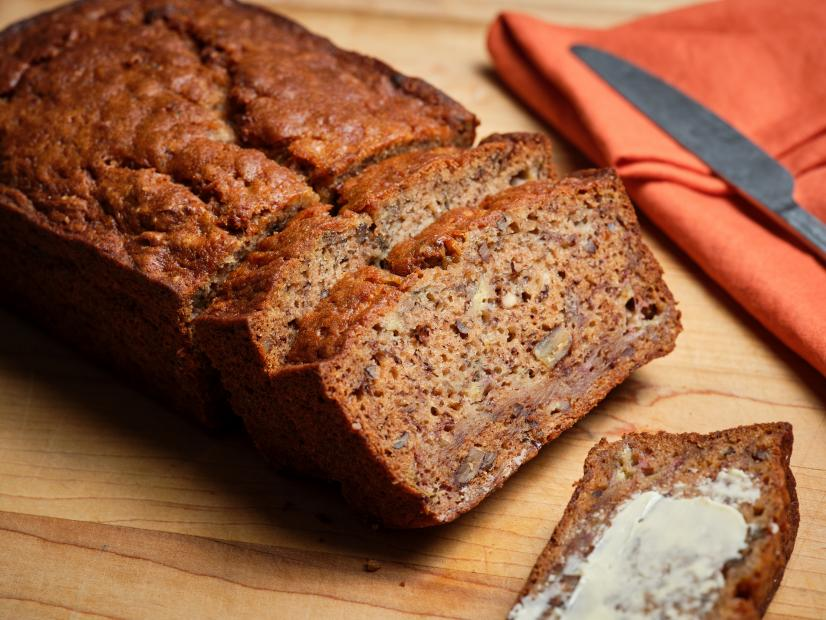

Banana Bread

Ingredients
- 2 cups all purpose flour
- 1 teaspoon baking soda
- 1/4 teaspoon salt
- 1/2 cup butter
- 3/4 cup brown sugar
- 2 eggs, beaten
- 2 1/3 mashed overripe bananas
Directions
- Preheat oven to 350 degrees F (175 degrees C). Lightly grease a 9x5 in. loaf pan.
- In a large bowl, combine flour, baking soda and salt. In a separate bowl, cream together butter and brown sugar. Stir in eggs and mashed bananas until well blended. Stir banana mixture into flour mixture; stir just to moisten. Pour batter into prepared loaf pan.
- Bake in preheated oven for 60 to 65 minutes, until a toothpick inserted into center of the loaf comes out clean. Let bread cool in pan for 10 minutes, then turn out onto a wire rack.
Recipe Info
Contact Me
Email me!
32 Campus Drive
Missoula, MT 59812